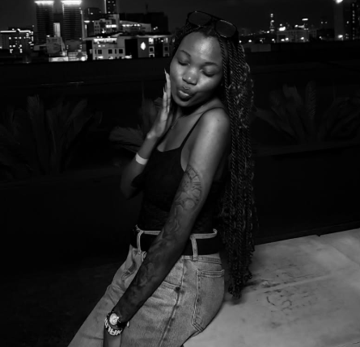

Peace
May life give you the kind of peace that doesn't need explaining.
29 • 08 • 2026
Some friendships begin quietly and somehow become part of the story.
Pioneer International University • 2021
Somewhere between lectures, conversations, ordinary campus days and everything that came with university life, our paths crossed.
Four words can describe the beginning: we met in 2021.
What makes it special is everything that came after.

Dear Sweets,
Life has a funny way of putting people in our path without telling us how important those people might become.
We met back in 2021 at Pioneer International University, and years later, I can look back and appreciate the friendship, the conversations, the laughs and all the little moments that made the journey what it is.
Today is your day.
A chance to celebrate you, the person you've become, the things you've overcome and everything that is still ahead of you.
I hope this new chapter brings you genuine happiness, beautiful surprises, meaningful experiences and plenty of reasons to smile.
Thank you for being one of those people whose presence became part of my university story — and, more importantly, part of my life.
Happy Birthday, Sweets. ❤️
We met at Pioneer International University.
University days, conversations, laughter and memories.
Years later, there's still a reason to celebrate the person you are.
More life. More memories. More chapters waiting to be written.
May life give you the kind of peace that doesn't need explaining.
May every new chapter take you closer to the woman you want to become.
May the little things keep finding their way into your happiest days.
29 AUGUST
May this year be kind to you.